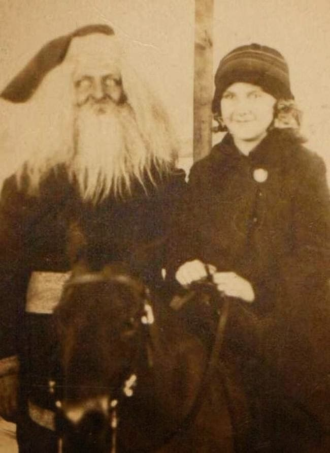

Who are we?
We are a group of dedicated people trying to track down, identify, research, capture and interrogate Santa(s).
Mike Cliff - The founder and most dedicated Santa hunter with an impressive track record. Avid public speaker teaching the masses about the mysterious northern entity.
Bob Kåre - The programmer. An incredible designer, cooking up the most impressive of websites. Like this one.
Phil Philadelphia - Arctic explorer. Claims to not be affiliated with our group in order to not appear suspicious as he travels into hostile territory.

Who is Santa?
There are many theories about the man or creature known as "Santa Claus". We are careful not to discount any of them for certain, but the basis we work with is this:
Santa Claus is possibly a dangerous extraterrestrial being made by AIs (artificial intelligences), created by ancient aliens from outer regions of space unknown to mankind. He/it is known to be the ultimate computer-wizard knowing every coding language in existence.
He/it is believed to possess incredible supernatural powers such as the ability to fly through the air in what has been seen as a sleigh pulled by reindeer (which Santa Claus probably mind-controls). Other known abilities is to fit through any chimney, teleportation, and fire & ice magic.
Highly recurring rumours has it that there have been breaking-and-enterings happening with 'it' coming down the chimney of people's houses, eating up all the cookies and drinking all the milk. And also leaving gifts with no receipt before vanishing.
Read more here.
How can I help?
Capturing a powerful entity like Santa Claus is no easy task. He/it remains at large to this day in part due to there being a very small amount of hunters and trappers. This is where you come in, we hope. One of the world's greatest mysteries and the galaxy's most powerful beings could potentially have a solution in you!
Read more about how to find and capture Santa(s) here.
Have you seen this enigmatic figure? Please contact and tell us about it!